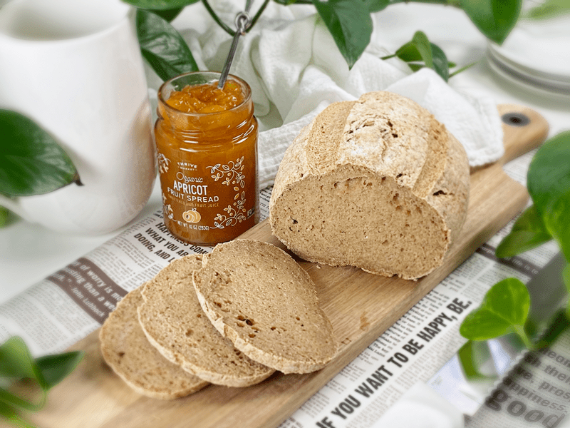
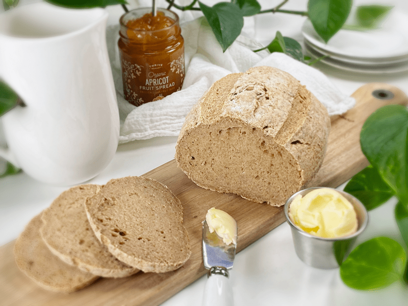
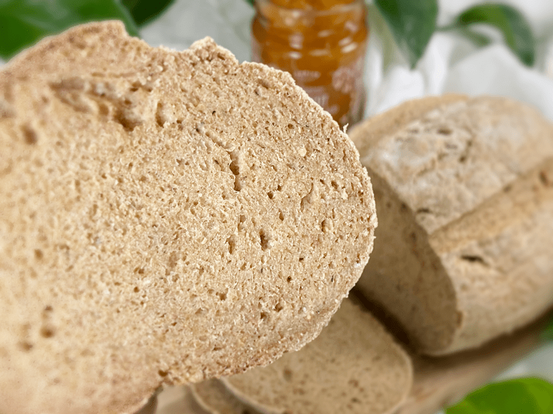
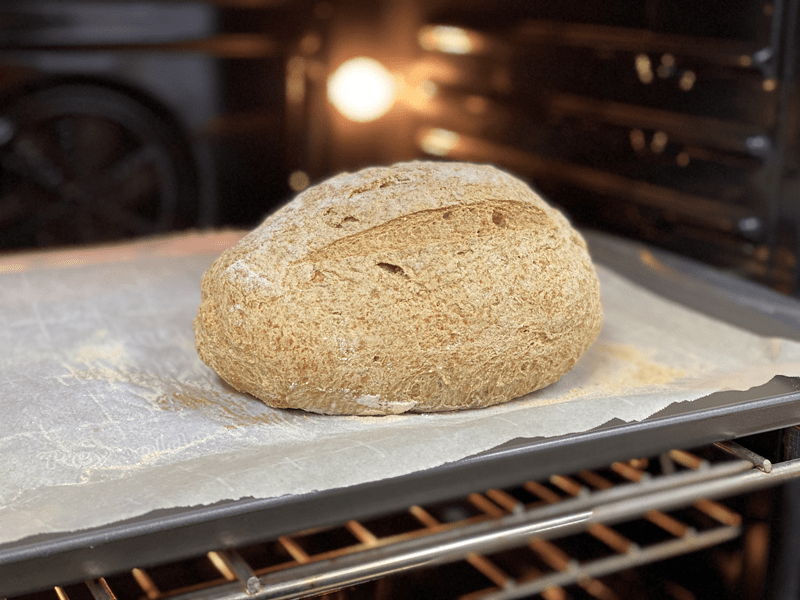

Well BREAD | Baked | Vegan | Gluten-Free | Oat-Free | Yeast-Free
Well bread… I am having fun with a play on words these days. I grew up as an only child so it doesn’t take much to entertain myself. And for those of you who giggled at the recipe name… that means you are in the same boat as me! This recipe is similar to another bread recipe of mine with a few slight changes, one being no oats. Instead, I used brown rice flour. So if you are looking for a gluten, oil, nut, yeast, oat-free bread recipe… I just might have nailed it for you.

So, why create a new recipe post for a bread where you only changed one of the flours and exchanged the honey for maple syrup? I like to document ALL of my recipes, even with the tiniest of changes. It gives me a chance to shine the light on the new ingredient additions, which in turn, just may inspire a person to be more open and creative in the kitchen.
You might be asking why I decided to cut out the oats and use rice flour instead. Logical question. Oats are sometimes avoided by people who have gluten sensitivities, even though by nature they are gluten-free. People with these conditions have an immune system reaction to avenin, a protein found in oats. People who are sensitive to gluten, such as those with celiac disease, may also react adversely to oats due to cross-contamination of products. So, with that in mind, I decided to try a replacement for oats, and I am so glad I did. Even if you don’t have reactions to oats, it’s nice to have options so you can rotate nutrients.

So, with all this talk about brown rice flour, I decided that I will briefly go over a few things regarding it. If you have any questions about the other ingredients, please click (here) where I talked more in detail about them on my Everyday Sandwich Bread recipe.
Brown Rice Flour
- When following a gluten-free diet due to celiac disease or the presence of gluten sensitivity, rice flour can provide you with a comparable amount of fiber and protein without the presence of gluten. Brown rice flour is known to be rich in protein and is high in B6 (a critical vitamin that performs a variety of functions in the body).
- If you don’t make your own rice flour, it is good to know that the milling process affects the texture of the flour, and not all brands are the same. Lately, I have been using Bob’s Red Mill Brown Rice Flour and I have been happy with it. All this to say that if you aren’t thrilled with the outcome of the bread, try another brand before writing it off.
- If you wish to make your own flour and have a Vitamix or equivalent, you are in luck. Tip: Grinding rice can cause the grains to heat up; therefore, for best results, place the rice into the freezer for about 30 minutes before blending to avoid overheating the flour.
- It is affordable and easy to find, and has a mild flavor and texture. The tan color gives baked goods a slightly browner look.
- Brown rice flour doesn’t do well as a solo flour; in fact, most gluten-free flours don’t. They all rely on a buddy system, meaning it’s best to bake with a combination of gluten-free flours. Brown rice flour is a little denser, which is another reason to mix it with lighter flours.

Flavor and Texture of the Bread
The flavor of this bread is VERY neutral, which is a good thing, especially if you want to make sandwiches out of it or use a wide variety of spreads ranging from sweet to savory. The texture is more on the dense side, with a tight crumb. This means that the bread holds up perfectly and doesn’t fall apart when sliced. In the photo, I sliced it 1/4″ and it didn’t crumble in the least.
If you are new to gluten-free baking, start with that first successful recipe you like, then make it over and over. That is how I have learned to bake gluten-free. Gradually I learned how I could substitute one type of flour for another, or alter some ingredient to suit my taste. Doing this will help you become more confident in making substitutions, and that is an important skill for a gluten-free baker. I hope you enjoy this recipe and learned something along the way. blessings, amie sue
 Ingredients
Ingredients
Preparation
Psyllium Gel
- Quickly whisk the water and psyllium husks in a mixing bowl. It will instantly start to gel, which is to be expected. Set aside while you prepare the remaining ingredients, so it can thicken.
- Preheat the oven to 350 degrees (F).
- Line a baking sheet with parchment paper, sprinkled with a little extra flour.
Dry Ingredients
- In the mixing bowl that we are going to knead the bread in, whisk together the rice flour, sorghum flour, buckwheat flour, arrowroot, baking soda, baking powder, and salt.
- If you have a sifter, use that to thoroughly incorporate all the dry ingredients.
- To make the buckwheat flour, place the whole kernels in the blender and process to a powder. Easy.
Mixing the Dough
- Add the psyllium gel and drizzle the maple syrup around the bowl of dry ingredients.
- Using either a hand mixer or a free-standing mixer with dough attachments, knead for 5 minutes (set a timer on your phone) to ensure that it gets kneaded enough (don’t we all love feeling needed?).
- Start the mixer on low until the flour is folded in, then turn it up ONE speed. If you start off at too high a speed, the flour will jump out of the bowl. If the dough feels too wet, add a tablespoon of arrowroot, and if it feels too dry, add a tablespoon of water
- You can do this by hand, but plan on kneading the dough for up to 10 minutes.
- Shape the dough into a round or oblong shape and place it on the baking sheet.
- Score the top of the bread with the tip of a sharp knife, going no more than 1/4″-1/2″ deep. This creates that wonderful texture that you see in the photos.
- Bake on the center rack for 50-60 minutes.
- Take the loaf out of the oven and turn it upside down. Give the bottom of the loaf a firm thump! with your thumb, like striking a drum. The bread will sound hollow when it’s done.
- When it’s done baking, slide it onto a cooling rack and wait to cut when cool.
Storage
- Once the bread has thoroughly cooled, you can wrap it. It should last up to roughly 5 days.
- Brown paper bag: This will better protect your loaf and allow for good air circulation, meaning that your crust won’t get soft. Some people claim that a sliced loaf stored cut-side down in a paper bag will stay the freshest.
- Plastic bag: If you want to avoid staling at all costs, go with a plastic bag. Make sure to get as much air out of there as possible before sealing. Your crust will soften, but your bread won’t dry out or harden prematurely. Make up for unwanted softness with toasting.
- Tea towel: Wrap the bread in a tea towel, then place it in the bread box.
- Fridge: Whether you store it in the fridge is up to you. Many people feel that bread in the fridge turns stale quicker. If you’re not going to finish a loaf in the first few days after baking it, you might want to freeze it until you’re ready to eat it.
- Freezing: Rather than freezing the loaf as a whole, preslice it and place wax or parchment paper in between each slice before sliding it into a freezer-safe container. That way you can pull out 1,2, or as many slices as you want.

© AmieSue.com